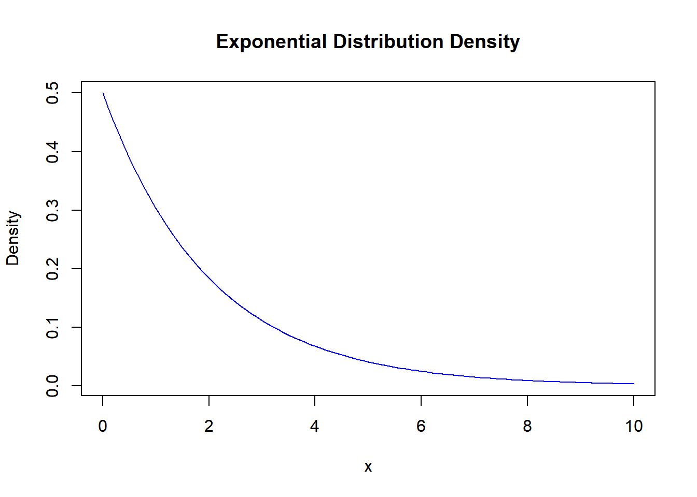
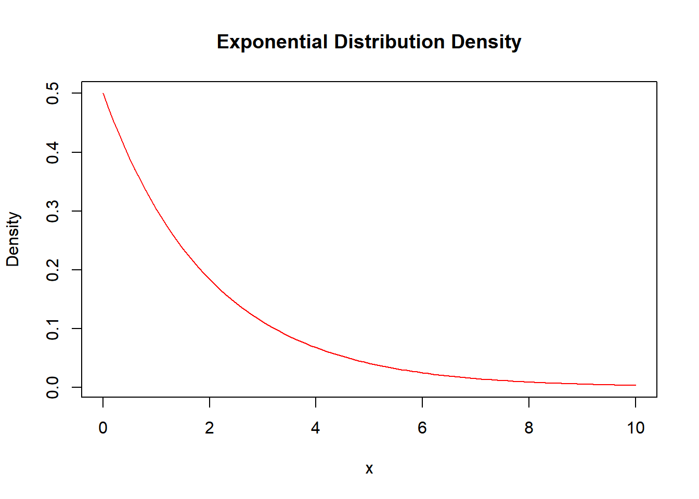
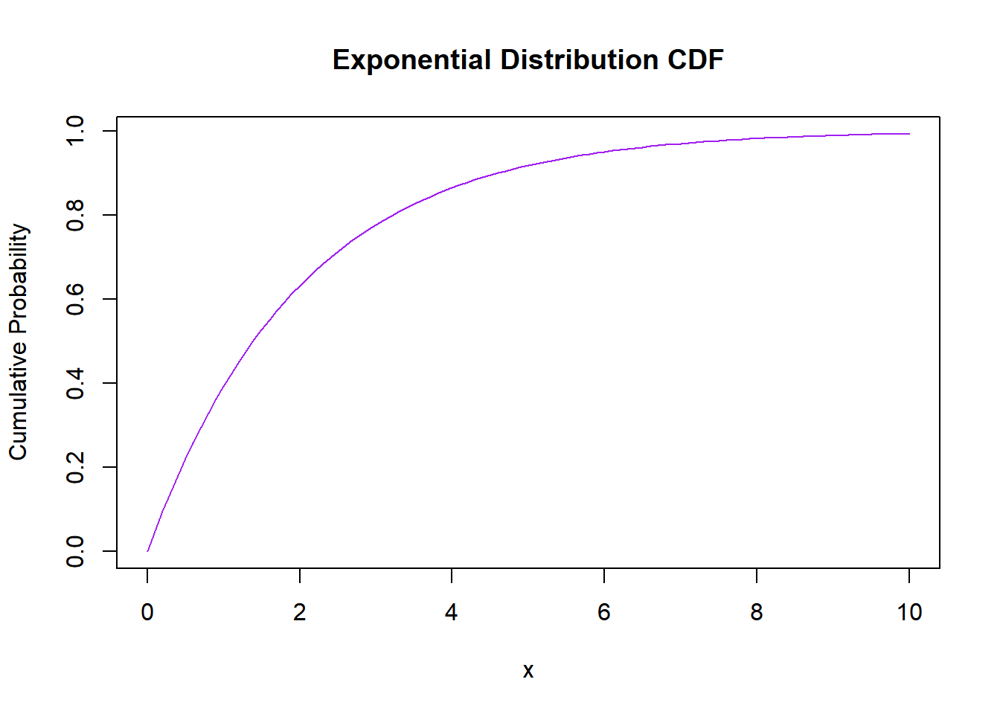
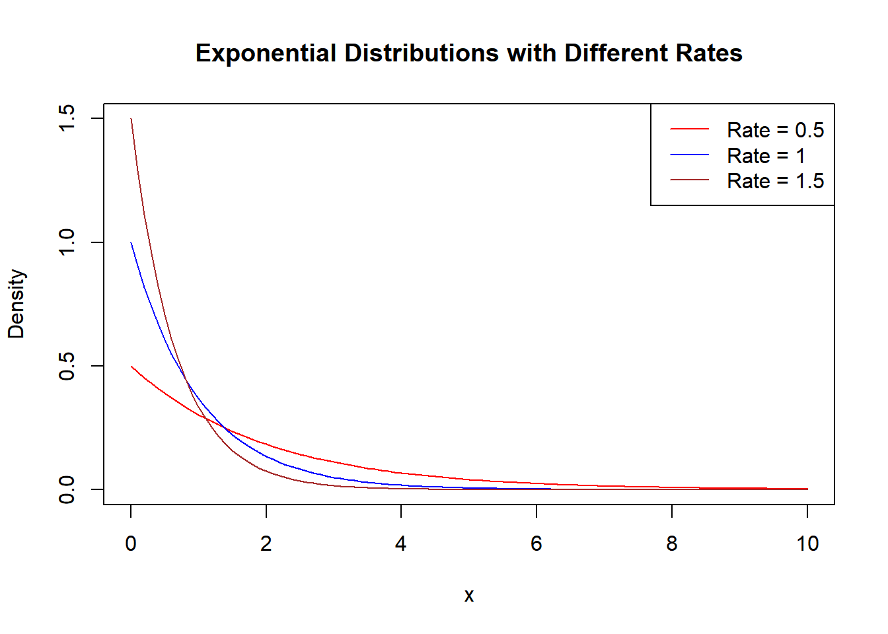

dexp(1, 0.2) # 비율이 0.2일 때, 1단위시간 내에 사건이 발생할 밀도 계산[1] 0.1637462pexp(1, 0.2) # 비율이 0.2일 때, 1단위시간 이내에 사건이 발생할 누적 확률 계산[1] 0.1812692qexp(0.5, 0.2) # 비율이 0.2일 때, 50%의 확률로 발생할 수 있는 사건의 시간 계산[1] 3.465736rexp(5, 0.2) # 비율이 0.2인 지수 분포에서 5개의 무작위 사건 시간 생성[1] 11.374880 3.239535 8.815600 5.755029 3.175466# curve함수를 이용해서 지수분포의 확률밀도함수 그리기
rate <- 0.5 # 지수 분포의 비율(λ) 설정
curve(dexp(x, rate), from = 0, to = 10, # 지수 분포의 확률 밀도 함수 그래프 그리기
xlab = "x", ylab = "Density",
main = "Exponential Distribution Density", col = "blue")
# plot함수를 이용해서 지수분포의 확률밀도함수 그리기
x_values <- seq(0, 10, by = 0.1) # 확률 밀도 함수를 계산할 값의 범위
densities <- dexp(x_values, rate) # 확률 밀도 계산
plot(x_values, densities, type = "l", col = "red", # 확률 밀도 그래프 그리기
main = "Exponential Distribution Density",
xlab = "x", ylab = "Density")
# curve함수를 이용해서 지수분포의 누적분포함수 그리기
rate <- 0.5 # 지수 분포의 비율(λ) 설정
curve(pexp(x, rate), from = 0, to = 10, # 지수 분포의 누적 분포 함수 그래프 그리기
xlab = "x", ylab = "Cumulative Probability",
main = "Exponential Distribution CDF", col = "purple")
# 세 개의 모수(0.5, 1, 1.5)에 대한 지수분포의 확률밀도함수 그리기
rates <- c(0.5, 1, 1.5) # 세 개의 모수 설정
colors <- c("red", "blue", "brown") # 색상 설정
curve(dexp(x, rates[1]), from = 0, to = 10, ylim = c(0, 1.5), # 첫 번째 분포 그리기
xlab = "x", ylab = "Density",
main = "Exponential Distributions with Different Rates",
col = colors[1])
for (i in 2:length(rates)) { # 나머지 분포 추가
curve(dexp(x, rates[i]), from = 0, to = 10, add = TRUE, col = colors[i])
}
legend("topright", legend = paste("Rate =", rates), col = colors, lty = 1)# 범례 추가